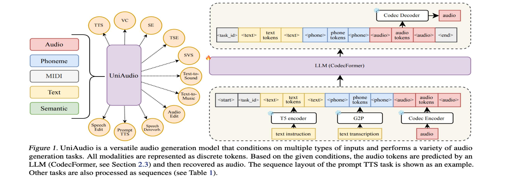
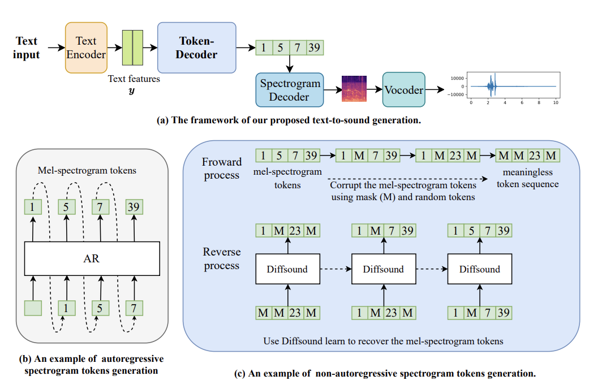
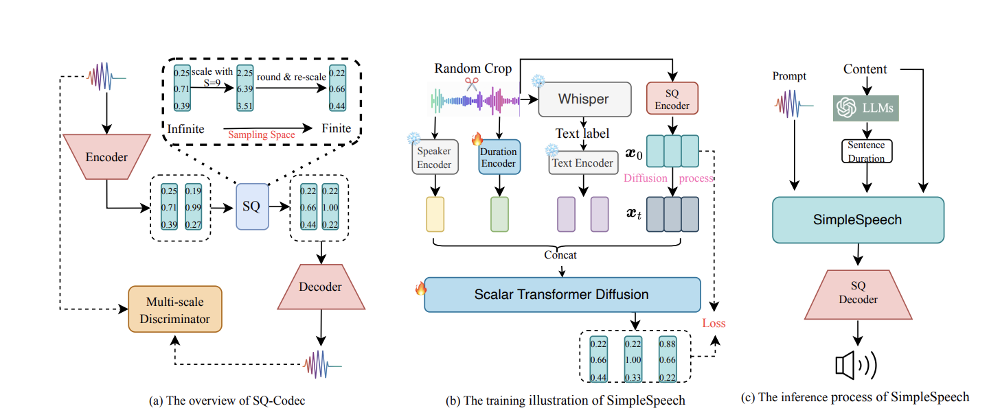
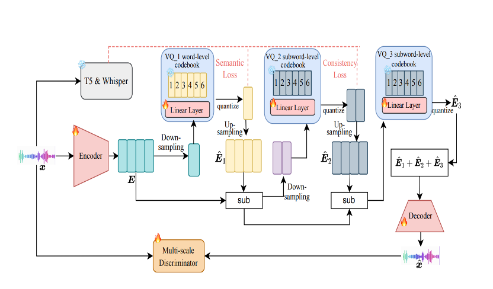
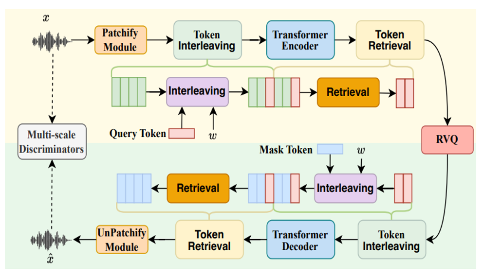

About
I am a PhD student at The Chinese University of Hong Kong, majoring in Speech and Audio Processing, supervised by Prof. Helen Meng. Before that, I received the Master's Degree from Peking University in 2023.
My research focuses on developing a human-agent that can communicate with humans, e.g. understanding human's speech and environment sounds, and then producing feedback to humans.
Research Interests
News
- 2025 ALMTokenizer accepted by ICML 2025!
- 2025 SimpleSpeech 2 accepted by IEEE TASLP 2025.
- 2025 Recognized as ICLR Notable Reviewer and NeurIPS Top Reviewer.
- 2024 Received IEEE SPS Young Author Best Paper Award for Diffsound!
- 2024 Won ISCA Best Student Paper Award at Interspeech 2024 for SimpleSpeech.
- 2024 UniAudio highlighted by Stanford AI Index Report 2024 as one of only three audio papers (alongside Google's MusicLM and Meta's MusicGen).
- 2024 UniAudio accepted by ICML 2024; UniAudio 1.5 accepted by NeurIPS 2024.
Education
-
The Chinese University of Hong KongPhD Student, SEEMAug 2023 - Present
-
Master's Degree, School of Electronic and Computer EngineeringAug 2020 - Aug 2023
-
Bachelor's Degree, School of Computer Engineering and ScienceAug 2016 - Jul 2020
Experience
-
Research Intern, Speech Group · Supervisor: Xu TanJul 2023 - Sep 2023
-
Research Intern, Speech Group · Supervisors: Songxiang Liu, Chao Weng, Bo WuMay 2021 - May 2023
Highlighted Research

UniAudio: An Audio Foundation Model Toward Universal Audio Generation
A unified audio foundation model capable of generating speech, music, sound effects, and more within a single framework. One of only three audio papers highlighted in the Stanford AI Index Report 2024, alongside Google's MusicLM and Meta's MusicGen.

Diffsound: Discrete Diffusion Model for Text-to-sound Generation
The first text-to-audio generation work. Proposes a discrete diffusion model to generate diverse and high-quality sound effects directly from text descriptions, opening up the text-to-audio generation research direction.

SimpleSpeech: Towards Simple and Efficient Text-to-Speech with Scalar Latent Transformer Diffusion Models
The first non-autoregressive TTS that supports large-scale speech training without frame-level annotations. Uses scalar latent transformer diffusion models to achieve high-quality speech synthesis with significantly reduced complexity and inference cost.
InstructTTS: Modelling Expressive TTS in Discrete Latent Space with Natural Language Style Prompt
The first Chinese TTS system that supports natural language prompt-controlled speech style generation. Enables intuitive and flexible control over speech style, emotion, and prosody through simple text instructions.

UniAudio 1.5: Large Language Model-driven Audio Codec is A Few-shot Audio Task Learner
Demonstrates that an LLM-driven audio codec can serve as a powerful few-shot learner across diverse audio tasks, unifying audio understanding and generation through a codec-based approach.

ALMTokenizer: A Low-bitrate and Semantic-rich Audio Codec Tokenizer for Audio Language Modeling
Proposes a new codec paradigm that achieves extremely low bitrate while preserving rich semantic information, specifically designed for audio language modeling and enabling more efficient audio-LLM integration.
All Publications
* denotes equal contributions.
-
ICML, 2024
-
IEEE TASLP, 2023
-
Interspeech, 2024
-
IEEE TASLP, 2024
-
NeurIPS, 2024
-
ICML, 2025
-
IEEE TASLP, 2025
-
ICML, 2023
-
AAAI, 2024
-
DCASE Workshop, 2022
-
Interspeech, 2021
-
ICASSP, 2022
-
Preprint, 2023
Services
- IEEE/CAA Journal of Automatica Sinica Reviewer
- ICASSP, InterSpeech Reviewer
- ICML, NeurIPS, ICLR, ACM-MM, COLM, IJCAI Reviewer
- IEEE Transactions on Audio, Speech, and Language Processing Reviewer
- IEEE Signal Processing Letters Reviewer
Selected Awards
- ICLR Notable Reviewer 2025
- NeurIPS Top Reviewer 2025
- IEEE SPS Young Author Best Paper Award 2024
- ISCA Best Student Paper Award 2024
- Outstanding Graduate of Peking University 2023
- Excellent Graduation Thesis of Peking University 2023
- 1st Team Ranking of DCASE Challenge Task 5 (Judges' Award) 2021
- Bronze Prize of ACM-ICPC Asia Regional Competition 2018